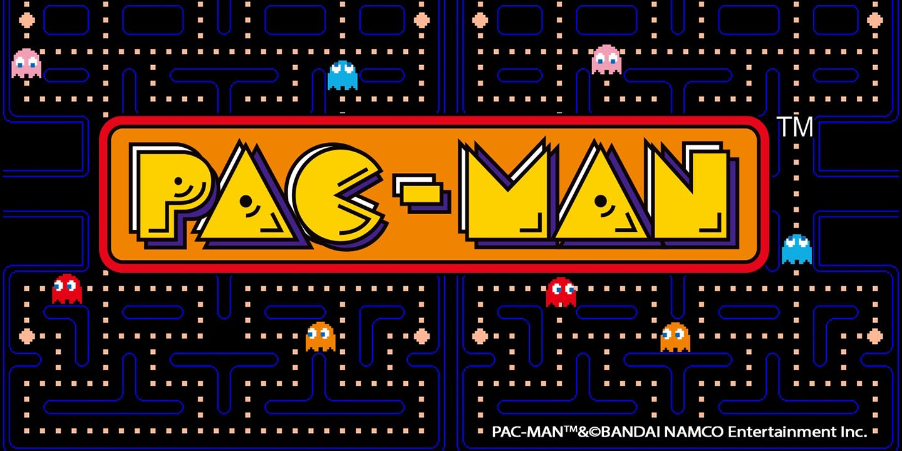
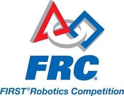
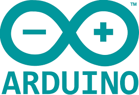

林偉博的個人blog
Welcome to my blog. 此blog存放我的許多學習上的經歷

大一下期中專案--組合語言專案
在大一下的計算機程式設計這門課學完組合語言之後，我們就做了這個有關於組合語言的專案，在這個專案中，我們需要做出如同python interpreter的效果。精確地說，我們將輸入數條算式，算式中含有...
Read more →

大一上期末專案--經典遊戲Pacman專案
在這個專案中，我需要做出經典遊戲--Pacman。這款遊戲中，玩家可以操縱黃色小精靈吃掉地圖上的 bean，吃完所有 bean 之後即可獲得勝利。在此專案中獲得滿分。
Read more →
高二：紅綠燈視覺辨識專案
在高中時就因為注意到人工智慧越來越夯，因此我開始主動在課餘時間做了一些關於 AI 的專題和研究。其中最讓我印象深刻的是紅綠燈辨識專案，我訓練出來的辨識模型最後達到了90%以上的準確率。
Read more →

高二：電影GUI專案
以網路爬蟲取得電影院網路上正在上映的電影時間，再利用 API 將這些時段和 Google Calendar 上的空檔時間比對，將比對後的時間呈現在 GUI 上，使用者選擇時段後再由 API 記錄在 Google Calendar上。
Read more →

高二和高一：國際機器人比賽FRC
在高一(2019)和高二(2020)兩年間都有參加國際機器人比賽FRC(FIRST Robotics Competition)，在高二時擔任隊長和電子裝置組的組長，並且得到冠軍和最佳工程獎。
Read more →

國三：高雄市校園創客Arduino程式創意競賽
在國三時，我和朋友參加了高雄市舉辦的校園創客 Arduino 程式創意競賽，最後獲得高雄市銀牌。此經驗啟發我走向電資領域的道路。
Read more →